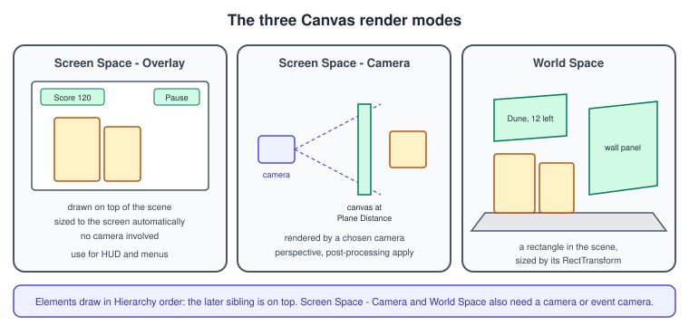
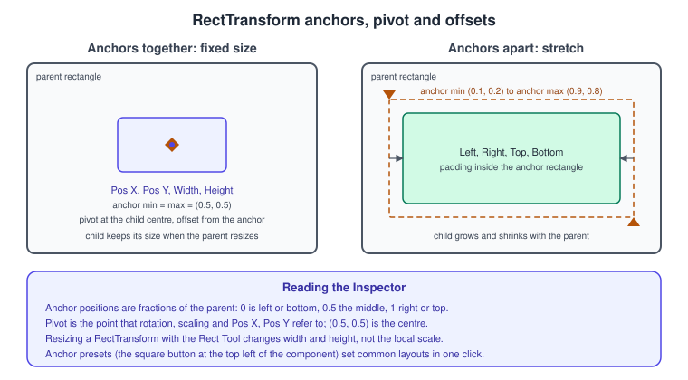
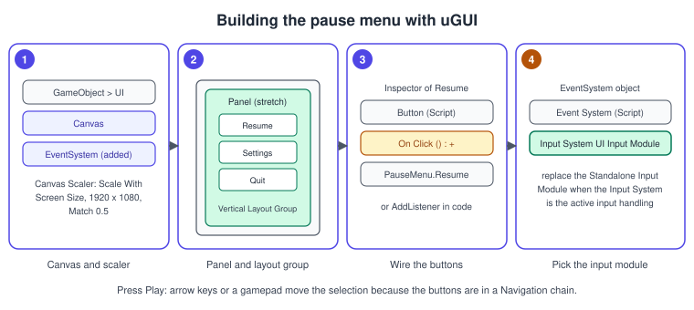

uGUI and TextMeshPro
|
This content was generated with the assistance of AI and should be verified against the official documentation before being relied on in production. |
uGUI (also called Unity UI) is the GameObject-based UI system: every button, image and label is a GameObject with a RectTransform and a component, all of them children of a Canvas. You build it in the Scene view and the Hierarchy, wire it with the Inspector, and it animates with Animation Clips and Timeline like any other object. TextMeshPro (TMP) is the text renderer used by uGUI and by 3D text. The Bookshelf uses uGUI here for the pause menu, a settings panel and a score display, while the HUD of the game is built in UI Toolkit (UI Toolkit) so the two approaches can be compared on the same game.
The facts were checked in November 2026 against the Unity 6.3 LTS manual and the com.unity.ugui package manual, version 2.0, which is the version that ships with 6.3 and includes TextMeshPro. Features from later package versions are marked: the Raycast Receiver and TMP loading callbacks (ugui 2.5, Unity 6.5) and the Safe Area component, maximum layout sizes and the Clamped fit mode (ugui 2.6, Unity 6.6). The code uses the UnityEngine.UI and TMPro namespaces and works on every platform Unity builds for. Unity’s own comparison page lists uGUI as the recommended system for runtime UI (see UI Toolkit for the table), and it remains the better fit for UI authored in the scene, animated with clips or Timeline, or tied to scene objects.
The Canvas

The Canvas is the area every UI element must be inside. It is a GameObject with a Canvas component; creating any UI element from the GameObject menu (GameObject > UI) adds a Canvas if the scene has none, together with an EventSystem object. The Canvas generates the meshes for its elements, batches them, and issues the draw calls.
-
Screen Space - Overlay draws the UI on top of everything, sized to the screen and resized automatically when the resolution changes. No camera is involved. Use it for HUDs and menus.
-
Screen Space - Camera places the Canvas a given Plane Distance in front of a camera, so the camera’s settings affect the UI: with a perspective camera the UI has perspective, and post-processing can apply to it.
-
World Space makes the Canvas an ordinary rectangle in the scene, sized with its RectTransform and sorted by 3D position. Use it for UI that is part of the world (the manual calls these diegetic interfaces), such as a price tag on a shelf.
Elements draw in the order they appear in the Hierarchy: the first child is drawn first and a later sibling is drawn on top. Change the order by dragging in the Hierarchy or by calling Transform.SetAsFirstSibling, SetAsLastSibling or SetSiblingIndex. The Additional Shader Channels setting adds extra vertex attributes (TexCoord1 to 3, Normal, Tangent) for custom UI shaders, and Vertex Color Always in Gamma Color Space defers the gamma to linear conversion of vertex colours to the shader, which preserves precision for dark colours in a linear colour space project; a custom UI shader must then do the conversion itself.
Source: uGUI manual: Canvas
Canvas Scaler
The Canvas Scaler component controls the scale and pixel density of everything under the Canvas, including font sizes and image borders. Its UI Scale Mode has three settings:
-
Constant Pixel Size: elements keep the same size in pixels regardless of the screen; the Scale Factor multiplies all of them.
-
Scale With Screen Size: you design against a Reference Resolution (for the Bookshelf, 1920 by 1080) and the Canvas scales up or down with the screen. If the aspect ratio differs, Screen Match Mode decides what happens: Match Width or Height (with a Match value between 0 for width and 1 for height), Expand (the canvas is never smaller than the reference) or Shrink (never larger).
-
Constant Physical Size: elements keep a physical size in a chosen Physical Unit, using the screen DPI, with a Fallback Screen DPI for devices that do not report one.
For a World Space Canvas the scaler controls Dynamic Pixels Per Unit for dynamically created bitmaps such as text and Reference Pixels Per Unit. For a game that runs from phones to desktops, Scale With Screen Size with Match 0.5 is the usual starting point.
Source: uGUI manual: Canvas Scaler
RectTransform: anchors, pivot and offsets

Every UI element is a rectangle. The RectTransform replaces the Transform and adds width and height, a pivot and anchors. The Rect Tool moves, resizes and rotates the rectangle; with a RectTransform it changes width and height instead of the local scale, which is why resizing does not distort font sizes or the borders of sliced images.
-
Anchors are four small triangles shown in the Scene view, defined as fractions of the parent rectangle: 0 is the left or bottom side, 0.5 the middle and 1 the right or top. Anchor Min is the lower-left anchor and Anchor Max the upper-right.
-
When the anchors are together, the Inspector shows Pos X, Pos Y, Width and Height; the element keeps its size when the parent resizes.
-
When the anchors are apart on an axis, the Inspector shows Left and Right (or Top and Bottom), the padding inside the rectangle between the anchors; the element stretches with the parent.
-
The Pivot is the point around which rotation, scaling and resizing happen, and which Pos X and Pos Y refer to.
-
The Anchor Presets button at the top left of the component sets common layouts (corners, edges, centre, stretch) in one click. Holding Shift while dragging an anchor moves the matching corner of the rectangle with it. Enabling Raw Edit Mode (the R button) changes anchor and pivot values without counter-adjusting the position.
The manual’s rule of thumb: anchor to the corner or edge an element should stay near, and stretch the anchors for things that must fill space, such as a background panel.
Source: uGUI manual: Basic Layout
Auto layout
The anchor system places things freely. For structured lists, the auto layout system sizes and places elements from their content. It is built on two ideas.
A layout element is any GameObject with a RectTransform that reports a minimum, preferred and flexible width and height; images and text provide these from their sprite or text. A Layout Element component overrides them. A layout controller uses those values to set sizes and positions:
-
Content Size Fitter resizes its own RectTransform to fit the content (set Horizontal Fit or Vertical Fit to Preferred or Min); in Unity 6.6 (ugui 2.6) there is a Clamped fit mode that keeps the size between the minimum and maximum without driving it.
-
Aspect Ratio Fitter keeps a ratio (fit inside the parent or envelope it).
-
Horizontal Layout Group, Vertical Layout Group and Grid Layout Group arrange children. A group first allocates minimum sizes, then preferred sizes if there is room, then flexible sizes with the remaining space.
The system evaluates widths first and then heights: a calculated height can depend on a width, but never the other way around. A layout is rebuilt at the end of the frame, just before rendering; LayoutRebuilder.MarkLayoutForRebuild(rectTransform) requests a rebuild after you change something that invalidates it. Properties that a controller drives (such as the width under a Content Size Fitter) appear read-only in the Inspector and are not saved with the scene. Unity 6.6 adds Max Width and Max Height to Layout Element and propagates maximum sizes through the groups.
Source: uGUI manual: Auto Layout
Input: the EventSystem
A uGUI scene needs an EventSystem object. It manages which object is selected, which input module is active, and the raycasting that decides what the pointer is over; it forwards events to objects that implement the handler interfaces (IPointerClickHandler, ISubmitHandler, IMoveHandler and the rest). Exactly one input module is active, and it must be on the same GameObject as the EventSystem.
Three raycasters exist: the Graphic Raycaster (UI), the Physics 2D Raycaster and the Physics Raycaster (3D objects, so a scene object can receive the same events through the same handler interfaces). The Graphic Raycaster sits on the Canvas and tests every UI graphic with Raycast Target enabled; it can also be blocked by 2D or 3D objects through Blocking Objects and Blocking Mask.
With the Input System package active (the default in new Unity 6 projects), uGUI always needs the Input System UI Input Module component, which defines which Input System actions reach the UI. The EventSystem’s default Standalone Input Module is for the legacy Input Manager; the Inspector offers a button to replace it. UI Toolkit, by contrast, derives its events from the project-wide actions without the module (Unity 2023.2 and later). See Input System.
Source: uGUI manual: Event System
Source: Input System manual: UI support
Interaction and visual components
The built-in components are in two groups. The visual ones draw: Text (legacy, superseded by TextMeshPro), Image, Raw Image, Mask and Rect Mask 2D. The interaction ones respond: Button, Toggle, Toggle Group, Slider, Scrollbar, Dropdown, Input Field and Scroll Rect. All interaction components derive from Selectable, which provides the transition (colour tint, sprite swap, animation), the Navigation mode used for keyboard and gamepad movement, and the interactable flag. A CanvasGroup on a parent applies alpha, interactable, blocksRaycasts and ignoreParentGroups to every child at once, which is the standard way to fade and disable a panel. In Unity 6.5 (ugui 2.5) the Raycast Receiver component was added: a non-visual interactable area that intercepts raycasts from the Graphic Raycaster without drawing any geometry, which is cheaper than a transparent Image used for the same purpose.
Source: uGUI manual: Visual Components
Building the pause menu
-
In the main menu choose GameObject > UI and create a Canvas; Unity also adds an EventSystem object. Name the canvas
PauseCanvas. -
Set the Canvas Render Mode to Screen Space - Overlay. On the Canvas Scaler set UI Scale Mode to Scale With Screen Size, Reference Resolution to 1920 by 1080 and Match to 0.5.
-
Add a child Panel and set its anchor preset to stretch in both directions with zero offsets, so it fills the screen. Change its colour to a translucent black.
-
Add a child object
Buttonswith a Vertical Layout Group (spacing 16, Child Alignment middle centre, Control Child Size width and height on), centred with fixed size anchors. Add three Button children namedResume,SettingsandQuit; their TextMeshPro child labels use the text Resume, Settings and Quit. The first time you add a TMP object, Unity offers to import the TMP Essential Resources; accept. -
On the EventSystem object, replace the Standalone Input Module with the Input System UI Input Module (use the button the Inspector shows).
-
Add a
CanvasGroupand thePauseMenuscript below toPauseCanvas, and drag the three buttons into its fields.

Source: uGUI manual: Button
using System.Collections;
using UnityEngine;
using UnityEngine.EventSystems;
using UnityEngine.UI;
namespace Bookshelf.UI
{
/// <summary>A pause menu built with uGUI: fades with a CanvasGroup and works with keyboard and gamepad.</summary>
[RequireComponent(typeof(Canvas), typeof(CanvasGroup))]
public sealed class PauseMenu : MonoBehaviour
{
[SerializeField] private Button resumeButton;
[SerializeField] private Button quitButton;
[SerializeField, Min(0.01f)] private float fadeSeconds = 0.2f;
private Canvas _canvas;
private CanvasGroup _group;
private Coroutine _fade;
private void Awake()
{
_canvas = GetComponent<Canvas>();
_group = GetComponent<CanvasGroup>();
SetVisible(false);
}
private void OnEnable()
{
resumeButton.onClick.AddListener(Hide);
quitButton.onClick.AddListener(Quit);
}
private void OnDisable()
{
resumeButton.onClick.RemoveListener(Hide);
quitButton.onClick.RemoveListener(Quit);
}
public void Show()
{
Time.timeScale = 0f;
_canvas.enabled = true; // disabling the Canvas component hides it cheaply
_group.interactable = true;
_group.blocksRaycasts = true;
// Keyboard and gamepad need a selected object to start navigating from.
EventSystem.current.SetSelectedGameObject(resumeButton.gameObject);
StartFade(1f, false);
}
public void Hide()
{
Time.timeScale = 1f;
_group.interactable = false;
_group.blocksRaycasts = false;
StartFade(0f, true);
}
private void StartFade(float target, bool hideAtEnd)
{
if (_fade != null)
{
StopCoroutine(_fade);
}
_fade = StartCoroutine(Fade(target, hideAtEnd));
}
private IEnumerator Fade(float target, bool hideAtEnd)
{
float start = _group.alpha;
// The game is paused (timeScale 0), so the fade must use unscaled time.
for (float t = 0f; t < fadeSeconds; t += Time.unscaledDeltaTime)
{
_group.alpha = Mathf.Lerp(start, target, t / fadeSeconds);
yield return null;
}
_group.alpha = target;
if (hideAtEnd)
{
_canvas.enabled = false;
}
_fade = null;
}
private void SetVisible(bool visible)
{
_canvas.enabled = visible;
_group.alpha = visible ? 1f : 0f;
_group.interactable = visible;
_group.blocksRaycasts = visible;
}
private static void Quit()
{
#if UNITY_EDITOR
UnityEditor.EditorApplication.isPlaying = false;
#else
Application.Quit();
#endif
}
}
}TextMeshPro
TextMeshPro replaces the legacy Text component with better control over formatting and layout: character, word, line and paragraph spacing, kerning, justified text, links, more than thirty rich text tags, multiple fonts, sprites, custom styles and advanced rendering with custom shaders. Since Unity 6 (ugui 2.0) it is part of the com.unity.ugui package and included in the Editor, with no separate installation.
To use it, import the resources once: Window > TextMeshPro > Import TMP Essential Resources adds the essential assets (default font asset, shaders and settings) to a TextMesh Pro folder in the Project window. Import TMP Examples & Extras adds samples and is recommended for first-time users. Creating the first TMP object from GameObject > UI > Text - TextMeshPro offers the import.
There are two component families. TextMeshProUGUI (Text - TextMeshPro under UI) draws on a Canvas and takes part in the uGUI layout system. TextMeshPro (3D Object > Text - TextMeshPro) is a mesh renderer for text in the scene. Both derive from TMP_Text. The related controls are TMP_InputField and TMP_Dropdown.
Font assets
TMP does not render a font file directly. A font asset is built from a Unity font and holds two sub-assets: a font atlas texture with the characters, and a material that uses one of the TMP shaders. The recommended atlas type for most uses is the signed distance field (SDF) atlas, because it stays smooth when the text is scaled or transformed; the smooth and raster atlases are for static text viewed straight on, where texels and screen pixels correspond. Create font assets with the Font Asset Creator (a window under Window > TextMeshPro), or create an empty one from a Unity font with Assets > Create > TextMeshPro > Font Asset and let it fill in dynamically.
-
A Dynamic font asset adds glyphs to its atlas as text needs them, which suits text with unpredictable characters such as player names. The Clear Dynamic Data menu command empties the character and glyph tables and atlas while keeping the font feature tables (ligatures, kerning), and Clear Dynamic Data on Build does it automatically on build to reduce the build size.
-
A Static font asset contains a fixed set of characters; generate it for the character set you need.
-
Fallback font assets supply glyphs the main font lacks, which is how you cover several scripts or emoji.
-
Font assets must live in a location TextMeshPro can find and include in builds; the default path is set in the TextMesh Pro settings.
Rich text and formatting
TMP rich text uses tags inside the string: <b>, <i>, <color=#RRGGBB>, <size=24>, <sprite name="star">, <link="id"> for clickable regions, <mark>, <align=center>, <line-height> and many more. Styles (in the TMP Style Sheet) name a combination of opening and closing tags so a designer can restyle text in one place.
using TMPro;
using UnityEngine;
namespace Bookshelf.UI
{
/// <summary>Shows the score with allocation-free number formatting.</summary>
[RequireComponent(typeof(TMP_Text))]
public sealed class ScoreView : MonoBehaviour
{
private TMP_Text _text;
private int _shown = -1;
private void Awake() => _text = GetComponent<TMP_Text>();
public void Show(int score)
{
if (score == _shown)
{
return; // changing the text rebuilds the mesh; skip when it is the same
}
_shown = score;
// SetText formats the number into the internal buffer instead of building a new string.
_text.SetText("Score {0}", score);
}
public void ShowCombo(int multiplier)
{
// Rich text: a coloured, larger multiplier next to a plain label.
_text.SetText("Combo <color=#B45309><size=140%>x{0}</size></color>", multiplier);
}
}
}Source: uGUI scripting API: TMP_Text
Source: TextMeshPro manual: Rich text
Source: TextMeshPro manual: Font Assets
TMP_Text.SetText is the high-performance way to change text that changes often: it accepts StringBuilder, character arrays and a format string with numeric arguments, so frequent updates do not create garbage. Unity 6.6 (ugui 2.6) adds a ReadOnlySpan overload for the same purpose.
Safe areas
Phones have notches, rounded corners and gesture bars. Screen.safeArea returns the rectangle in pixels that is safe for UI. In Unity 6.6 (ugui 2.6) a Safe Area component does this for you: attach it to one RectTransform under the Canvas, put UI that must remain visible inside it, and keep full-bleed artwork outside. In Unity 6.3 LTS write the equivalent yourself by setting the container’s anchors to the safe area:
using UnityEngine;
namespace Bookshelf.UI
{
/// <summary>Anchors this RectTransform to Screen.safeArea; reapplies when it changes.</summary>
[RequireComponent(typeof(RectTransform))]
public sealed class SafeAreaFitter : MonoBehaviour
{
private RectTransform _rect;
private Rect _lastSafeArea;
private Vector2Int _lastScreen;
private void Awake() => _rect = GetComponent<RectTransform>();
private void OnEnable() => Apply();
private void Update()
{
// Rotation, window resizing and foldables change the safe area at runtime.
if (Screen.safeArea != _lastSafeArea
|| Screen.width != _lastScreen.x
|| Screen.height != _lastScreen.y)
{
Apply();
}
}
private void Apply()
{
if (Screen.width <= 0 || Screen.height <= 0)
{
return;
}
Rect safe = Screen.safeArea;
_lastSafeArea = safe;
_lastScreen = new Vector2Int(Screen.width, Screen.height);
Vector2 min = safe.position;
Vector2 max = safe.position + safe.size;
min.x /= Screen.width;
min.y /= Screen.height;
max.x /= Screen.width;
max.y /= Screen.height;
_rect.anchorMin = min;
_rect.anchorMax = max;
_rect.offsetMin = Vector2.zero; // stretch exactly to the anchors
_rect.offsetMax = Vector2.zero;
}
}
}Source: Scripting API: Screen.safeArea
Source: uGUI manual (2.6): Safe Area
Performance
Unity’s UI optimization guide describes where uGUI spends time, and the rules follow from how a Canvas works. The Canvas builds and batches the meshes of its elements; when one element changes, the whole Canvas is analysed again.
-
Split Canvases. Put static UI on one Canvas and dynamic UI that updates together on another. Child Canvases isolate their content and batch independently. A single Canvas with thousands of elements can cost several milliseconds when one element changes.
-
Limit Graphic Raycasters and disable Raycast Target. Every Canvas that needs input needs a Graphic Raycaster, which tests every input point against each target graphic. Remove raycasters from non-interactive canvases, and turn off Raycast Target on non-interactive images and on text over buttons. A blocking mask that casts 2D or 3D physics rays is expensive; use it sparingly.
-
Avoid expensive elements. Large lists and grids, and many overlapping elements (stacked cards cause overdraw), are costly. For an inventory with hundreds of items reuse a smaller pool of rows instead of one object per item.
-
Avoid layout groups when you can. Each element that dirties its layout does at least one
GetComponentcall per layout group above it. Use anchors for proportional layouts and, for hot, dynamic lists, compute positions in code on demand. -
Pool correctly. Disable the object first, then reparent it into the pool; to take it out, reparent it, update its data, then enable it. The other order dirties the hierarchy twice.
-
Hide with the Canvas component. Disabling the
Canvascomponent stops draw calls without discarding the meshes or triggeringOnDisableandOnEnableacross the hierarchy, so re-enabling does not rebuild. ThePauseMenuabove does this. -
Be careful with Animators. An Animator dirties its UI element every frame even if the value does not change. Animate rarely changing elements from code or a tween.
-
Hide the scene behind a fullscreen UI. If a menu covers the whole screen, disable the camera that renders the world.
Common mistakes
-
No EventSystem, or the wrong input module. Buttons do nothing. With the Input System active, use the Input System UI Input Module.
-
Everything on one Canvas. One changing score label rebuilds hundreds of elements. Split by update frequency.
-
Raycast Targetleft on everywhere. Every decorative image takes part in hit testing. Turn it off for non-interactive graphics. -
Editing a driven RectTransform by hand. Values controlled by a layout group or Content Size Fitter are overwritten on the next layout pass and are shown read-only.
-
Building text strings every frame. Use
TMP_Text.SetTextwith numeric arguments, and skip the call when the value has not changed. -
Resizing with scale instead of size. With a RectTransform, resize width and height; scaling distorts text and borders.
-
Forgetting
Time.unscaledDeltaTimein a paused game. Fades and animations driven by scaled time freeze attimeScale = 0. Set Animators to the unscaled update mode where used. -
Missing TMP Essential Resources. Text renders with pink or missing glyphs. Import them once per project.
-
No initial selection. Keyboard and gamepad navigation need
EventSystem.SetSelectedGameObjecton the first button when a menu opens. -
Ignoring the safe area on mobile. Buttons end up under the notch. Put UI that must be tappable inside a safe-area container.
What changed recently
| When | What |
|---|---|
Unity 6.0 and 6.3 LTS ( |
TextMeshPro is merged into the UI package and included in the Editor; the Input System is installed by default in new projects, so the Input System UI Input Module replaces the Standalone Input Module |
Unity 6.5 ( |
Raycast Receiver component; loading callbacks for TMP characters, font materials and colour gradients ( |
Unity 6.6 ( |
Safe Area component; Max Width and Max Height on layout elements; the Clamped fit mode of the Content Size Fitter; maximum sizes in layout groups; |
Where the books are outdated
| Book | What it teaches | Current practice (Unity 6.3 LTS) |
|---|---|---|
UIA ch. 3 and 7 |
|
IMGUI is legacy and not recommended for runtime UI; use uGUI (this page) or UI Toolkit |
UIA ch. 5 and 7 |
TextMeshPro as a separate package that you install, with uGUI Canvases for menus and HUDs |
TextMeshPro is part of |
UIA ch. 12 |
buttons and input handled through the legacy Input Manager |
add the Input System UI Input Module to the EventSystem when the Input System is the active input handling |
GDP ch. 4 to 7 |
UI patterns (Observer and event-driven updates) wired to uGUI components |
the patterns still apply; see Project Architecture and Design Patterns for event channels, and UI Toolkit’s runtime data binding for the observer built into the UI |
See also
-
UI Toolkit: the document-based alternative and the comparison table.
-
Input System: the actions the UI input module maps.
-
GameObjects, Components and Transforms: the Transform that RectTransform extends.
-
Audio: sliders for the mixer volume.
-
Animation and Mecanim: animating uGUI elements with clips.
-
Timeline and Cutscenes: UI animation on a timeline.
-
XR Development: world-space canvases for XR.
-
Profiling and Optimization: finding Canvas rebuild cost.
-
Build Profiles and Platforms: mobile builds where the safe area matters.
-
Scene Graphs and Asset Formats: parent-child hierarchies in general.